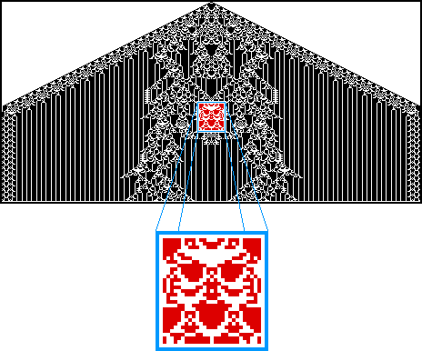

|  |
| This was discovered by accident. Notwithstanding a remark by a colleague, in my opinion this does not establish a link between CA and the Grateful Dead. |
| What other shapes are hidden in the patterns generated by CA? Email me (michael.frame@yale.edu) if you find something interesting. |